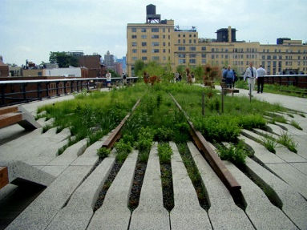
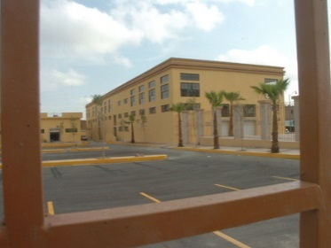
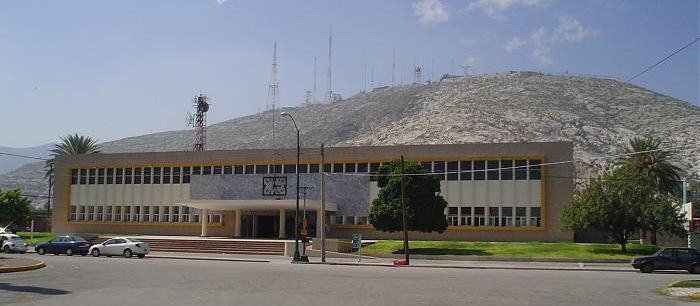
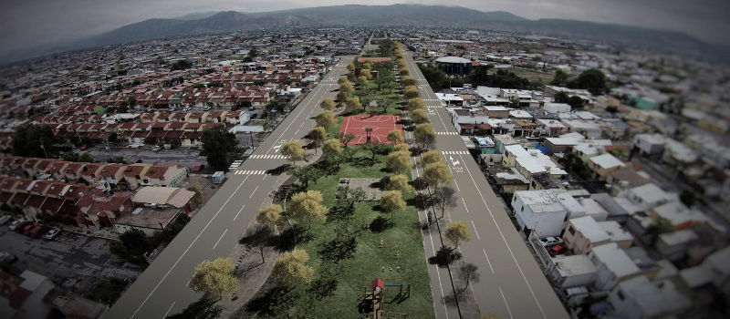

"Cuando una ciudad acepta como mandato la calidad de vida, cuando respeta a la gente que allí vive, cuando respeta el medio ambiente, y cuando se prepara para las nuevas generaciones, la gente comparte la responsabilidad de este mandato, y esta causa compartida es la única manera de hacer un sueño colectivo realidad"...
Jaime Lerner
La ciudad y sus significados han ido cambiando a lo largo del tiempo dependiendo de los nuevos retos, las necesidades y los nuevos intereses de la sociedad.
En la actualidad el urbanismo tiene nuevos retos y por lo mismo nuevos significados.
Los últimos años la zona urbana de Torreón tuvo un crecimiento expansivo con la creación de grandes desarrollos hacia las afueras de la ciudad, zonas con poca accesibilidad, alejadas del centro urbano y con pocos o nulos equipamientos y servicios urbanos.
Sin dejar de mencionar que existe un gran número de inmuebles abandonados y vacíos urbanos con un elevado potencial no solo para el desarrollo de edificios sino también de espacios públicos, donde se tienen resueltas las necesidades que demanda la ciudad: redes de servicios, vialidades, equipamientos lo cual no involucra la necesidad de crear nuevos.
Otras ciudades del país y del mundo han enfocado su atención en esta posibilidad del reciclaje urbano, logrando grandes resultados al convertir zonas degradadas en nuevos barrios con gran potencial y desarrollo que se resulta un nuevo punto de interés para los habitantes y visitantes de la ciudad.
Algunos proyectos realizados son:
Río Turia, Valencia
22@, Barcelona

Parque, Fundidora, Monterrey, N.L.

High Line, New York
De igual manera el reciclaje se ha llevado a menor escala en inmuebles específicos que se encuentran en desuso como antiguas naves industriales, edificios subutilizados y abandonados.

Centro comercial Antigua Harinera, Torreón, Coah.

Centro cultural Pilar Rioja, (antigua estación del Ferrocarril), Torreón, Coah.
Este concepto no es nuevo para la ciudad, pero falta ser explotado, es por eso que en la actualidad se nos plantea un nuevo reto, que requiere de la exploración de estos vacíos y zonas emergentes de lo que algún día tuvo utilidad y que en el presente es obsoleto.

Proyecto: Línea Verde Oriente en el antiguo derecho de vía del ferrocarril, Torreón, Coah.
Al aplicar esta práctica de reciclaje se puede aminorar los desplazamientos que causan tráfico y contaminación, la disminución del crecimiento desmedido que daña a la ciudad al generar divisiones sociales y económicas entre los habitantes, por lo que reutilizar, aprovechar las estructuras de edificios existentes y llenar huecos urbanos es indispensable y fundamental para renovar la ciudad, no existe la necesidad de seguir creciendo hacia afuera cuando tenemos tantas posibilidades en lo existente.
"...en lugar de continuar haciendo que la ciudad se desparrame, deberíamos completar su tejido"
Renzo Piano